Latest & highest quality. Three complete Instagram Reels with layered audio, color grading, text overlays.
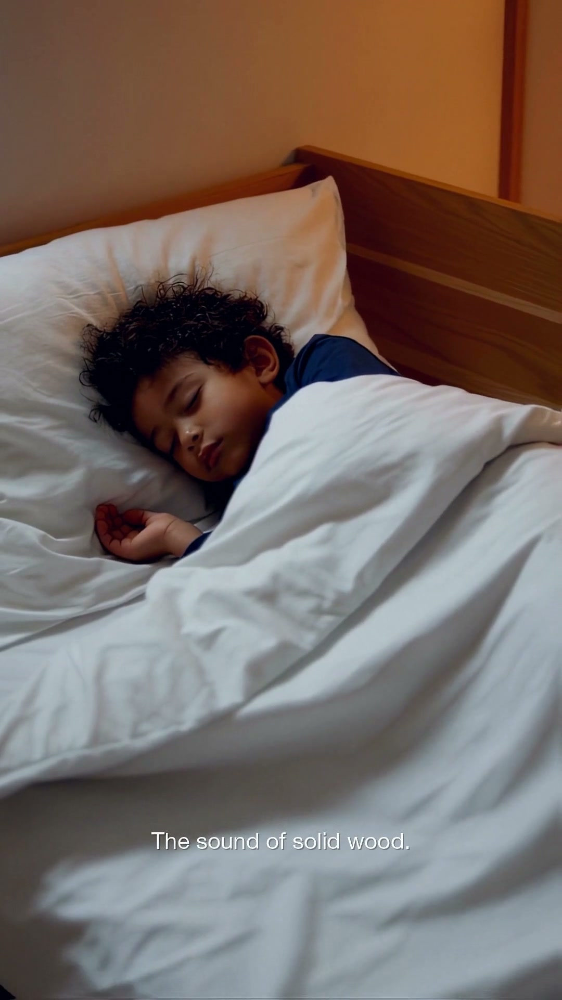
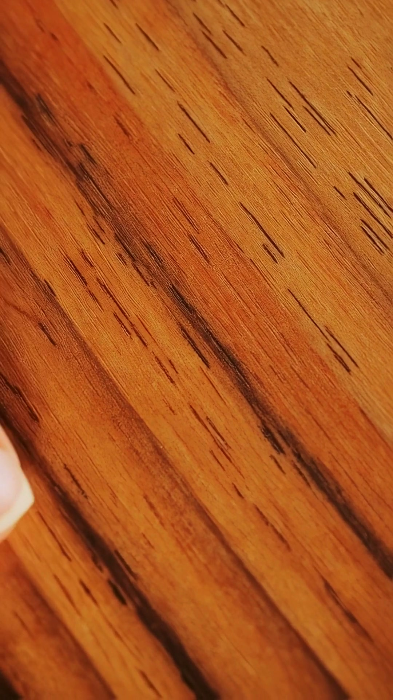
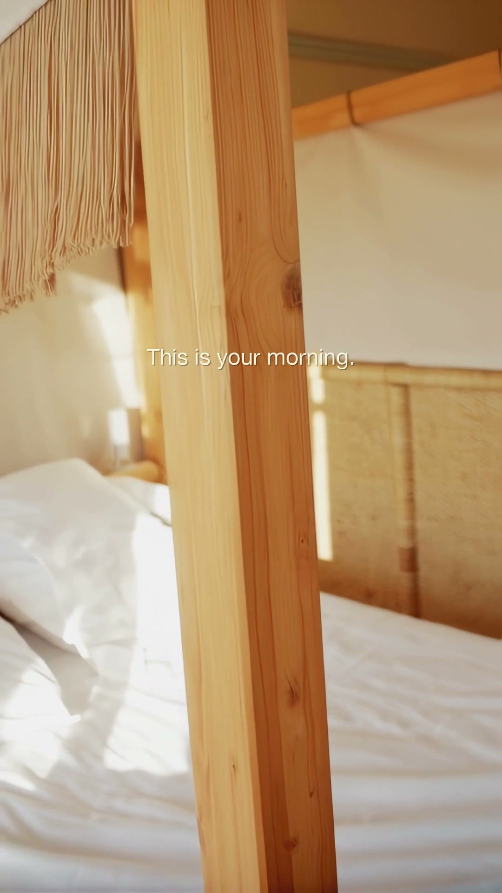
Earlier Sound of Safe version with hook cut + extended ASMR feel-this format.
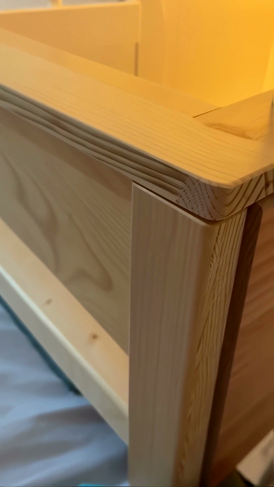
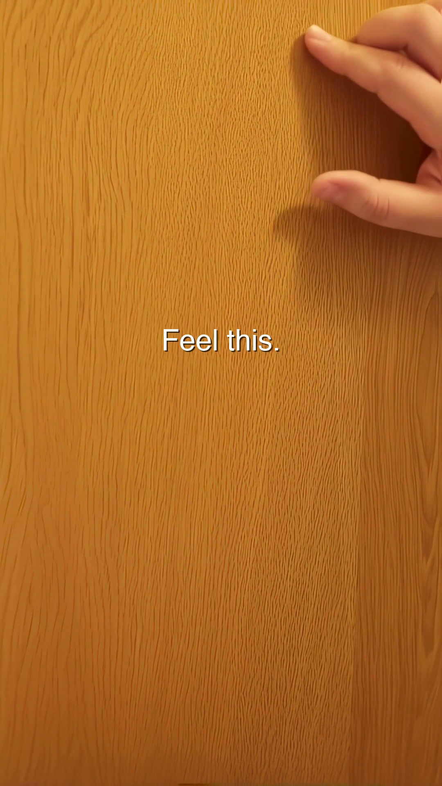
Scroll-stopping hook format tests. ~11s each. Bold claims, ASMR sensory, safety questions.
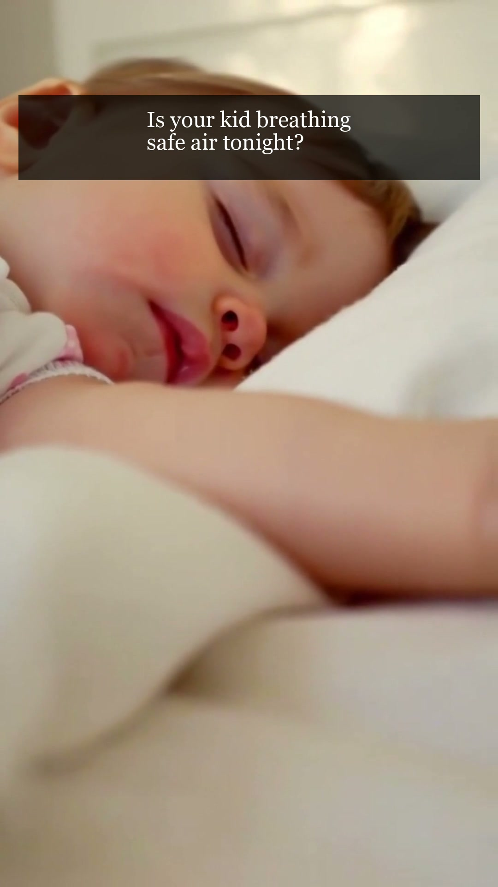
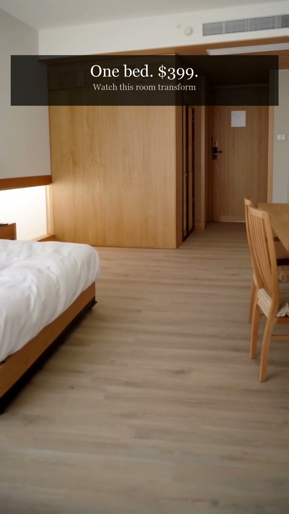
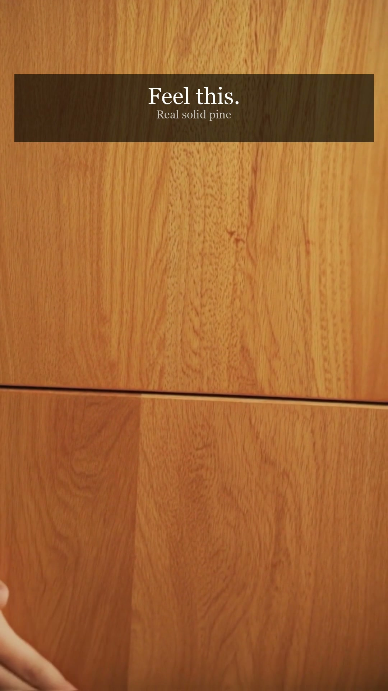
GREENGUARD emotional story, bedroom transformations, ASMR wood grain. The foundation pieces.
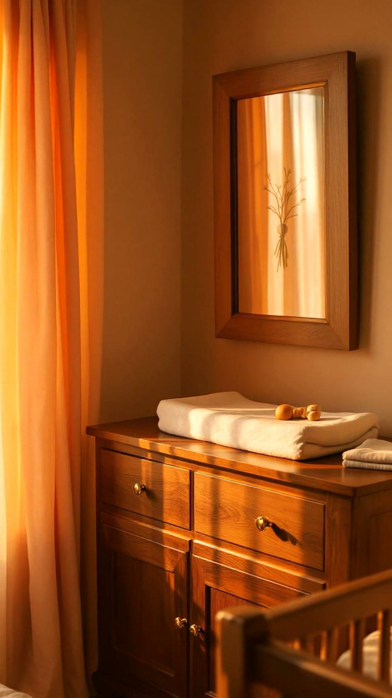
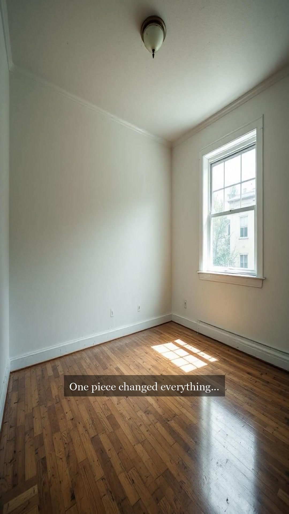
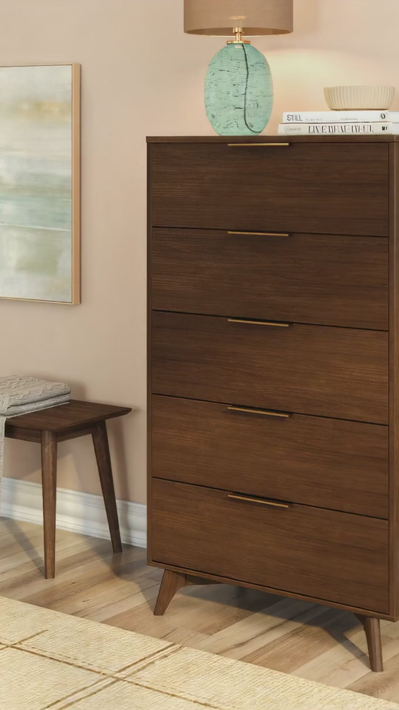
Bottom line: Strong creative concepts held back by AI-generation artifacts. Good prototypes — not yet publishable for a premium brand, and far from award level.